六、红外吸收光谱法 答案
一、选择题 ( 共61题 )
1. 2 分 (1009) (3)
2. 2 分 (1022)
[答] 结构Ⅱ。3300cm-1 谱带(-C≡C-H)的存在排除了Ⅲ，在1900～1650cm-1 缺少
C=O 伸缩可排除Ⅰ和Ⅲ。注意光谱中 -C≡C- 伸缩是很弱的带 (2200cm-1)。
3. 2 分 (1023)
[答] 结构Ⅲ。因为存在芳香 C-H 伸缩（大于 3000cm-1）和脂肪 C-H 伸缩
(3000～2700cm-1)， 仅有结构Ⅲ与其一致。
4. 2 分 (1068) [答] 结构Ⅱ。
5. 2 分 (1072) (4) 6. 2 分 (1075) (3) 7. 2 分 (1088) (2)
8. 2 分 (1097) (4) 9. 2 分 (1104) (4) 10. 2 分 (1114) (1)
11. 2 分 (1179) (3) 12. 2 分 (1180) (1) 13. 2 分 (1181) (3)
14. 2 分 (1182) (3) 15. 2 分 (1183) (3) 16. 2 分 (1184) (1)
17. 2 分 (1206) (2) 18. 2 分 (1234) (4) 19. 2 分 (1678) (4)
20. 2 分 (1679) (3) 21. 1 分 (1680) (3) 22. 1 分 (1681) (3)
23. 1 分 (1682) (2) 24. 2 分 (1683) (1) 25. 2 分 (1684) (4)
26. 2 分 (1685) (3) 27. 2 分 (1686) (1) 28. 2 分 (1687) (3)
29. 2 分 (1688) (1) 30. 2 分 (1689) (1) 31. 2 分 (1690) (2)
32. 2 分 (1691) (1) 33. 2 分 (1692) (2) 34. 2 分 (1693) (3)
35. 2 分 (1694) (2) 36. 2 分 (1695) (4) 37. 2 分 (1696) (3)
38. 2 分 (1697) (2) 39. 2 分 (1698) (4) 40. 2 分 (1699) (2)
41. 2 分 (1700) (4) 42. 2 分 (1701) (2) 43. 2 分 (1702) (4) 共轭效应
44. 2 分 (1703) (3) 45. 2 分 (1704) (2) 46. 2 分 (1705) (3)
47. 3 分 (1714) (2) 48. 1 分 (1715) (3) 49. 2 分 (1725) (3)
50. 2 分 (1790) (3) 51. 3 分 (1791) (2) 52. 2 分 (1792) (1)
53. 2 分 (1793) (4) 54. 2 分 (1794) (2) 55. 2 分 (1795) (3)
56. 1 分 (1796) (1) 57. 1 分 (1797) (2) 58. 1 分 (1798) (3)
59. 1 分 (1799) (3) 60. 1 分 (1800) (1) 61. 1 分 (1801) (3)
二、填空题 ( 共59题 )
1. 2 分 (2004)
[答] 更高
2. 2 分 (2011)
[答] 红外辐射应具有刚好满足分子跃迁时所需的能量；
分子的振动方式能产生偶极矩的变化。
3. 2 分 (2051)
[答] (1) 分子的振动方式必须是红外或心活性的；
(2) 某一振动方式频率与红外线对的某一频率相同（即能产生瞬时偶极矩变化）。
4. 2 分 (2055)
[答] N1/2
n = ─── × [ k(m1+ m2) / (m2× m2)]1/2
2pc
5. 2 分 (2083)
[答] 弯曲振动.
6. 2 分 (2091)
[答] 低波数
7. 2 分 (2093)
[答] a 高
8. 2 分 (2105)
[答] 3×3-6=3.
9. 5 分 (2473)
[答] N-H伸缩
C-H伸缩
C=O伸缩
C-H伸缩
10. 2 分 (2475)
[答]可能存在倍频, 和频和差频吸收峰, 所以可能出现某些附加的弱峰, 使实际吸收峰数目增多
11. 2 分 (2477)
[答](1) 4 (3N-5=4) (2) 2 (3) 不对称伸缩
12. 5 分 (2478)
[答](1) 红外光源 (2) 干涉仪 (3) 试样室 (4) 检测器
(5) 电子计算机(傅里叶变换) (6) 记录仪
13. 5 分 (2479)
[答] �� Ar-H伸缩
C=C伸缩(苯的骨架)
Ar-H弯曲
14. 5 分 (2480)
[答](1) 不饱和度为 2,(有一个叁键)
(2) 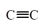
(3) -CH3, �� 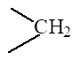
(4) 伸缩
(5) -CH3, 的CH弯曲
(6) CH3CH2CH2H
1-戊炔
15. 2 分 (2481)
[答](1) 有两个伸缩吸收峰(振动的偶合) (2) 有1个吸收峰
16. 5 分 (2482)
[答](1) 光源 (2) 单色器 (3) 吸收池 (4) 检测器 (5) 记录仪
17. 5 分 (2483)
[答](1) Nernst (能斯特)灯或硅碳棒 (惰性固体也可以)
(2) 光栅
(3) NaCl或KBr等晶体
(4)真空热电偶或热检测器
18. 2 分 (2484)
[答] (1) 双 (2) 消除多级次光谱重叠
19. 2 分 (2485)
[答](1) 糊状法 (2) 压片法 (3) 薄膜法
20. 2 分 (2486)
[答](1) 液膜法 (2) 溶液池(或液体池)法
21. 2 分 (2487)
[答](1) 波长: 0.77～1000mm 或波数 12987～10cm-1
(2) 波长: 2.5～25mm 或波数 4000～400cm-1
22. 5 分 (2529)
[答] Stokes线 高 (1分)
反Stokes线 低 (1分)
1600 (2分)
23. 4 分 (2532)
[答] (具有对称中心的反式结构的)n(C=C)是红外非活性的 (1分)
两个双键伸缩振动的偶合 (1分)
同相偶合 (1分)
高(或大) 高(或大) (1分)
F的(亲电)诱导效应(使C=C的力常数增大) (1分)
24. 4 分 (2533)
[答] (2)、(3)、(4)
(1)、(2)
每一正确判断1分, 多或少一错判均扣1分.
25. 4 分 (2534)
[答] (3)、(4)是红外活性的, (1)、(2)是拉曼活性的.
(这种完全对称的分子, 红外和拉曼活性是互补的, (3)、(4)是拉曼非活性的)
26. 2 分 (2535)
[答] 4; 3个.
27. 2 分 (2536)
[答] (4) (1) (3) (2)
28. 2 分 (2673)
(3)>(2)>(1)。
29. 2 分 (2674)
(1)>(3)>(2)。
30. 5 分 (2675)
a峰为nOH，b峰为nCH，c峰为nC＝C，d峰为nC－O－C。
31. 2 分 (2676)
AgCl； CaF2； AgCl。
32. 2 分 (2677)
（1－ 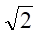
33. 2 分 (2678)
保持不变； 增加。
34. 2 分 (2679)
保持不变； 弹簧的频率取决于其力常数和体系里球的质量。
35. 5 分 (2680)
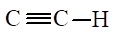
CH3－和－CH2－伸缩振动；
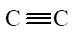
C＝O伸缩振动。
36. 2 分 (2681)
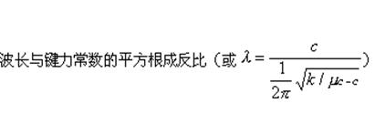
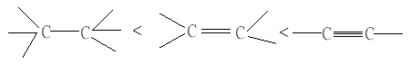
37. 2 分 (2682)
高频； 低频； 低频； 高频移动。
38. 2 分 (2683)
三个； 三个； 不对称伸缩振动、对称伸缩振动和弯曲振动。
39. 2 分 (2684)
伸缩； 低频； 弯曲； 高频。
40. 2 分 (2685)
基团特征振动频率； 官能团的依据； 4000～1500
41. 2 分 (2686)
1500、700； 特定分子。
42. 2 分 (2687)
9.3×1013； 3.2； 3100。
43. 2 分 (2688)
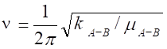
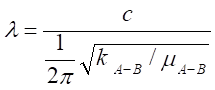
44. 5 分 (2689)
O－H伸缩振动； C－H伸缩振动（醛基）；
C＝O伸缩振动； C＝C伸缩振动。
45. 2 分 (2690)
伸缩振动； 弯曲振动（或变形振动）。
46. 2 分 (2691)
化学键两端的原子沿键轴方向伸缩，键长发生变化而键角不变的振动；
对称伸缩振动； 不对称伸缩振动。
47. 2 分 (2692)
使化学键的键角发生周期性变化 而键长不变的振动；
剪式振动、平面摇摆振动、非平面摇摆振动、扭曲振动。
48. 5 分 (2693)
某些振动方式不产生偶极矩的变化，是非红外活性的；
由于分子的对称性，某些振动方式是简并的；
某些振动频率十分接近，不能被仪器分辨；
某些振动吸收能量太小，信号很弱，不能被仪器检出。
49. 2 分 (2694)
分子的振动引起分子的偶极矩变化；
分子的振动引起分子的极化率改变。
50. 2 分 (2695)
频率强度谱（频率域光谱）； 频率； 时间强度谱（时间域光谱）； 时间。
51. 2 分 (2696)
hn； 增加； 加大。
52. 2 分 (2697)
CH3、CH2及醛基中的C－H伸缩振动引起；
C＝O伸缩振动引起；
CH3－、－CH2－的C－H 弯曲振动引起。
53. 2 分 (2698)
偶极矩； 单原子 、同核分子。
54. 2 分 (2699)
近红外光区、中红外光区、远红外光区；
中红外光区。
55. 4 分 (2700)
伸缩； 变形； 对称伸缩； 不对称伸缩；
剪式振动、非平面摇摆、扭曲振动、平面摇摆。
56. 2 分 (2701)
3750～3000； 3300～3000； 2400～2100。
57. 2 分 (2702)
相等 相近 公共原子； 公共原子。
58. 2 分 (2703)
增加； 分裂； 振动耦合。
59. 2 分 (2704)
庚烷； 乙腈毒性较强。
二、计算题 ( 共15题 )
1. 5 分 (3084)
[答]∵σ��(cm-1) = 1307(k/m)1/2
而��σ(cm-1) = 104/l，�齄� O-H 的折合质量 m = 16/(1+16) = 0.9412
104/l = 1307(k/m)1/2
k = (104/1307×2.77)2×0.9412 = 7.18 N/cm
2. 5 分 (3094)
[答]
N1/2 k m1 ・ m2
据 σ = ─── ×(──)1/2 μ= ──────
2pc μ m1 + m2
N = 6.022×1023 M1= 12 , M2= 14
(6.022×1023)1/2 12.0+14.0
∴ σ= ────────────×(17.5×105×──────)1/2 = 2144 cm-1
2×3.1416×2.998×1010 12.0×14.0
3. 5 分 (3120)
[答]
1 k
σ= ───(────)1/2
2pc ��m
波数之比为 (k)1/2 之比
σ(单) : σ(双) : σ(三) = (k1)1/2 : (k2)1/2 : (k3)1/2
1200 : 1667 : 2260 = (k1)1/2 : (k2)1/2 : (k3)1/2
k1 : k2 : k3 = 1.0 : 1.91 : 3.6
4. 5 分 (3136)
[答] W = 1 + n4 - ( n1 - n3 )/2
(n1, n3和 n4分别为分子中氢,氮和碳的原子数 )
W = 1 + 8 - (10/2) = 4
5. 5 分 (3137)
[答]
1) σ= 1302×(K/m)1/2
今σ= 4000 �� m= (1×19)/(1+19) = 19/20
k1/2 = 4000÷1302×(19/20)1/2 = 2.99
k = 8.97 ≈ 9.0 N/cm
[答]HF 键的力常数为 9.0 N/cm
2) 3HF 键和 HF 键的力常数相同
∴ σ �� m �� 3×19/22
── = ( ───)1/2 = ( ─────)1/2 = (60/22)1/2 = 1.65
σ�� m �� 19/20
��σ= 4000/1.65 = 2424 cm-1 = 4.13 mm
答: 吸收峰的波长为 4.13mm
6. 10 分 (3138)
[答] 由于吸收带频率取决于原子质量和化学键的强度
所以 1 k
�� σ = ───(──)1/2
2pc ��m
(1) 对C = O
1 12.3×105×(12+16)×6.02×1023
��σ= ──────── ( ─────────────────)1/2= 1758 cm-1
2×3.14×3×1010 12×16
��l = 104/1758 = 5.7 mm
(2) 对C-C
1 7.6×105×(12+12)×6.02×1023
��σ= ──────── ( ────────────────)1/2= 1464 cm-1
2×3.14×3×10 12×12
�� l=104/1464 = 6.8 mm
7. 5 分 (3145)
[答]
(1) 12 × 16 192
σ = 2170 cm-1 ��m = ────── = ───
12 ＋ 16 28
k1/2 = 2170 ÷ 1302 ×（192/28）1/2 = 4.365
k = 19.05 » 19 N/cm
(2) N1/2 k(m1+m2) (6.022×1023)1/2 1.91×106(14+16)
(a) σ = ───(───────)1/2 = ──────── (─────────)1/2
2pc m1m2 2×3.14×3×1010 14×16
= 2.08×103 cm-1
8. 5 分 (3368)
[答]��σ =1/(2pc)(k/m)1/2��, σ =1307(k/m)1/2��
��m (C=O) =6.86 ��m (C=Cl)=8.97
σ =1307×(12.1/6.86)1/2 = 1307×1.33 =1738cm-1
σ =1307×(3.4/8.97)1/2 = 1307×0.616 =805cm-1
9. 5 分 (3369)
[答] σ= 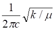 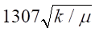
m = 0.923[m =12×1/(12+1)=12/13=0.923]
烷烃 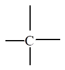
σ 1=1307 ×( 4.7/0.923)1/2 =1307 ×( 5.09 ) 1/2=2953 cm-1
烯烃 =C-H,
σ2=1307 ×( 5.1/0.923 ) 1/2=1307 ×( 5.52 ) 1/2=3072 cm-1
炔烃 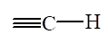
σ3=1307 ×( 5.9/0.923 ) 1/2=1307 ×( 6.39 ) 1/2=3304 cm-1
10. 2分（3370）
（缺）
11. 5 分 (3371)
[答] σ(C=C) =104/ 6.00 =1667cm-1
σ(C-C) k1
──── = ─── , ��σ(C-C) =σ(C=C) (k1/k2)1/2
σ(C=C) k2
��σ(C-C) =1667×( 1.0/1.91 )1/2=1667×( 0.524 )1/2=1206cm-1
��σ( 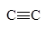
=2288cm-1
12. 5 分 (3372)
[答] σ=1/l, σ(C-O) =104/8.96 =1116cm-1
σ(C=O) [k(C=O)]1/2��
─── = ───── , σ(C=O) =σ(C-O)[k(C=O)/k(C-O)]1/2��
σ(C-O) [k(C-O)]1/2�� =1116×(2.42)1/2��
=1116×1.56 =1714cm-1
13. 10 分 (3405)
[答] (1) ��Dσ =(435.8×10-7)-1-(444.7×10-7)-1
=22946-22487
=459(cm-1) (2分)
(2) 反Stokes线的波数为
22946+459=23405(cm-1)
波长为
��l(As) =1/23405 =4.273×10-5(cm)
=427.3(nm) (2分)
14. 2 分 (3536)
K=1.0×10N/cm
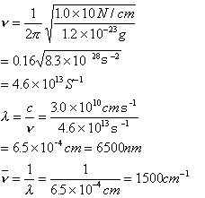
15. 5 分 (3537)
根据
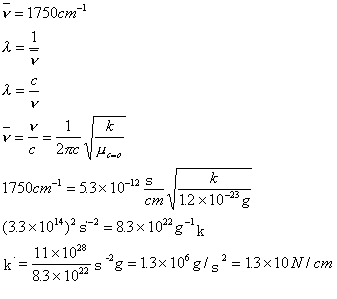
四、问答题 ( 共 58题 )
1. 5 分 (2474)
[答](1) C-C > C-N > C-O
(2) 因为 DE=h , ��DE=hc
, ��DE=hc ��, h、c为常数
��, h、c为常数
所以 DE与 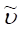
DE与l成反比
2. 5 分 (2476)
[答](1) 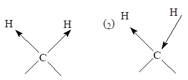
对称伸缩振动 不对称伸缩振动
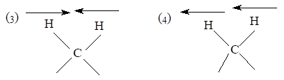
剪式(弯曲振动) 面内摇摆
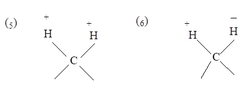
面外摇摆 扭曲
注: 不写名称只画出即可, 写出更好
3. 10 分 (4005)
[答] 既然 N2O 分子具有线性结构，它只可能是 N = O = N 或 N ≡ N = O 。若具有前一种结构，则只能具有反对称伸缩振动和弯曲振动引起的两个强吸收峰，与题意不符，故 N2O 分子具有 N ≡ N = O 结构。
其中 2224 cm-1 ( 4.50 mm ) 由 N ≡ N 伸缩振动引起；
1285 cm-1 ( 7.78 mm ) 由 N = 0 伸缩振动引起；
579 cm-1 ( 17.27 mm ) 由弯曲振动引起弱吸收峰
2563 cm-1 ( 3.90 mm ) 为 1285 cm-1 峰的倍频峰
2798 cm-1 ( 3.57 mm ) 为 2224 cm-1 峰与 579 cm-1 峰的和频峰。
4. 5 分 (4013)
[答] 实际吸收峰数目比正常振动模式的数目少的原因主要有以下几种：
(1) 某些振动并不引起偶极矩变化，它们是非红外活性的；
(2) 由于对称的缘故，某几种振动模式的频率相同，我们称这些振动是简并的，
只能观察到一个吸收峰；
(3) 某些振动的频率十分接近，不能被仪器分辨；
(4) 某些振动引起的红外吸收很弱，当仪器灵敏度不够时不被检出；
(5) 某些振动引起的红外吸收超出中红外光谱仪的测量波长范围，不被检出。
由于可能存在倍频、合和频和差频吸收峰，所以可能出现某些附加的弱峰，使实际吸收峰数目增多。
5. 5 分 (4014)
[答] 由于 N2无红外吸收，这两个吸收峰一定是 C=O 的振动引起的。其中强吸收峰2143 cm-1 ( 4.67 mm ) 为基频；弱吸收峰 4260 cm-1 ( 2.35mm ) 为倍频。
6. 5 分 (4020)
[答] 在 3500～3300 cm-1 范围内有一弱而尖锐的 N-H 吸收，在 3000～2700 cm-1范围内由 CH3和 CH2引起的C-H伸缩吸收，在羰基范围（1900～1650 cm-1)
��
有 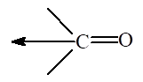
7. 5 分 (4027)
[答] 鉴别羰基化合物，快而有效的方法是用 IR 光谱法。测定该未知试样的 IR 光谱图，然后观察特征吸收。
若 3300 ～ 2500 cm-1 有一宽吸收带为酸
若 3500 cm-1 左右有中强峰（或等强度双峰），为酰胺
若 1300 ～ 1000 cm-1 有中等强度吸收，为酯
若 2850 ～ 2750 cm-1 有弱吸收带，为醛
若 1810 和 1760 cm-1 有两个吸收峰，为酸酐
若以上五种情况均无，为酮。
8. 10 分 (4041)
[答] 不饱和度为 5, 3500 ～ 3000 cm-1 缺少任何特征峰，分子中无 -OH 基。约在 1690 cm-1 有 n(C=O) 吸收带，可能为醛、酮或酰胺，分子式中无氮，不可能 为酰胺，又因 2700 cm-1 无醛基的 ��n(C=H)峰，故该化合物为酮类。 3000 cm-1 以上及 1600，1580 cm-1 表示分子中有苯环，而 700 及 750 cm-1 两峰说明该化合物为单取代苯，在 2900 cm-1 左右及 1360 cm-1 处的吸收表示含有 -CH3基。
综上所述，该化合物应为
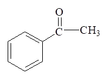
9. 5 分 (4049)
[答]1745 cm-1 有强吸收峰，说明有羰基 ( C = O )
3000 ～ 3100 cm-1，1600 cm-1，1500 cm-1 无吸收，说明不含苯环
3000 ～ 3100 cm-1无吸收，说明不含双键 ( = C = C = )。
10. 5 分 (4051)
[答] 以下事实可以证明存在芳香环：
1. n (C-H) 吸收均在 3000 cm-1 以上
2. 在 1620 cm-1，1500 cm-1 有芳香化合物的骨架振动
以上相关峰说明是芳香化合物
3. 在 700 cm-1 附近有 C-H 弯曲（面外）强吸收峰，并且在 2000～1660cm-1
之间存在有 C-H 弯曲泛频弱峰。
11. 5 分 (4052)
[答]环酮类化合物，随着环张力的增加，��n (C =O) 吸收带向高频移动。化合物(a)上的 C=O 位于两个六元环之外，环张力小于 (b)，因此(a)化合物的 n (C =O)小于(b)化合物。
12. 5 分 (4053)
[答] W = 1/2 [ 6(4-2) + 10(1-2) + 2 ] = 2
3300 cm-1 附近为 ≡CH 伸缩振动吸收峰
2900 cm-1 附近为 CH3- CH2―伸缩振动吸收峰
2100 cm-1 附近为 C≡C 伸缩振动吸收峰
1460 cm-1 附近为 ―CH2―弯曲振动吸收峰
1380 cm-1 附近为 ―CH3弯曲振动吸收峰
据此可推断该化合物结构为 CH3- (CH2)2CH2- C≡CH (1 - 己炔)
13. 5 分 (4055)
[答] W = 1/2 [ 7(4-2) + 6(1-2) + 1(2-2) + 2 ] = 5
＞ 3000 cm-1 的吸收峰为 = CH 的伸缩振动吸收峰
2700 cm-1 附近为典型的 C―H 吸收峰
1700 cm-1 附近为C = O 的伸缩振动吸收峰
1600～1450 cm-1 有几个峰为苯环骨架振动吸收峰
690～750 cm-1 有二个吸收峰为一取代苯特征峰
据此可以推断该化合物为
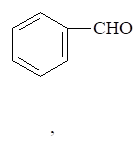
14. 5 分 (4056)
[答] 是 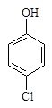
因为 3255 cm-1有强吸收说明有 OH。 1595, 1500 cm-1 有吸收说明有苯环。
1700 cm-1 无强吸收，说明不含羰基 ( C = O )
所以不可能是
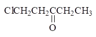
15. 5 分 (4057)
[答] 因为该化合物存在如下互变异构：
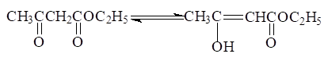
因此在 IR 谱图上，除了出现 ��n(C=C)吸收带外，还应出现 ��n(OH)和��n(C=O)吸收，n(C=O)吸收带出现在 1650 cm-1，n(OH)�鑫�收带在生成氢键时，可移至3000 cm-1。
16. 5 分 (4076)
[答] 在键合 OH 伸缩范围 ( 3450 ～ 3200 cm-1 ) 有一强吸收，在 C - H 伸缩范围 (3000～2700 cm-1) 有 CH3和 CH2特征谱带。
17. 5 分 (4124)
[答] ��m1为 HCl 的 m�� m2为 DCl 的 m��
��m= (M1M2)/(M1+ M2) ��m1/m2= [(35.5/36.5)/(71/37.5)] = 0.515
σ2/σ1= (m1/m2)1/2
��σ2=σ1×(m1/m2)1/2
��σDCl = 2886×(0.515)1/2 = 2072 cm-1
18. 5 分 (4125)
[答] 1. 3700 ～ 3000 cm-1 ��n (OH)
2. 3300 ～ 3000 cm-1 ��n (OH)(Ar-H)
3. 3000 ～ 2700 cm-1 ��n (OH)( H - C = O )
4. 1900 ～ 1650 cm-1 ��n (C=O)
5. 1600 ～ 1450 cm-1 ��n ( = C = C = ) (Ar)
19. 5 分 (4143)
[答] (1) 先分析不饱和度, 说明有双键存在 Ω = 1/2 [ 3(4-2) + 6(1-2) + 1(2-2) + 2 ] = 1
(2) 分析特征吸收峰
A. 3650～3100 cm-1 有一宽峰，说明有 O - H 伸缩振动
B. 2900 cm-1 有一强吸收峰说明有饱和 C - H 伸缩振动
C. 1680 cm-1 有一中强峰说明有 C = C 伸缩振动
D. 1450 cm-1 有一大且强吸收峰说明 CH3或 CH2存在
E. 1300～1000 cm-1 有三个峰说明有 C - O 伸缩振动
F. 900 cm-1 左右有峰为 = CH2面外摇摆吸收峰
(3) 据上面分析得出这是 CH2= CH - CH2OH (烯丙醇)
(不会是丙烯醇，因为乙烯式醇均不稳定)
20. 5 分 (4149)
[答](1) 有， (2) 无， (3) 有， (4) 无
21. 5 分 (4153)
[答] (1) 计算不饱和度
W = [ 12(4-2) + 11(1-2) + 1(3-2) + 2 ] = 8
(2) 分析特征峰
A. 3400 cm-1 附近有游离的 -NH 吸收峰（如为 -NH2在 1650 - 1560 cm-1
应有峰而谱图上没有这个峰，故否定）
B. 3030 cm-1 附近有芳环不饱和 C - H 伸缩振动
C. 1600 ～ 1450 cm-1 有苯环的特征吸收峰（ C = C 骨架振动之吸收峰 ）
D. 690，740 cm-1 有较强峰说明为苯环之一取代峰
(3) 据上面分析可初步断定为 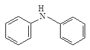
22. 5 分 (4384)
[答]分子振动能级的跃迁的能量与幅射能DE=hn相当, 且分子中该振动方式必须具有红外活性; 即瞬时偶极矩发生变化
23. 5 分 (4387)
[答]傅里叶变换红外光谱仪由以下几部分组成：
红外光源, 干涉计, 试样室, 检测器, 电子计算机(傅里叶变换), 记录仪等.
24. 5 分 (4388)
[答]3000～2500cm-1 宽峰为羧酸中的OH
2960～2850cm-1吸收峰 有C-H(-CH3, 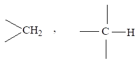
1740～1700cm-1 羧酸中的C=O
1475～1300cm-1
有C-H(-CH3,
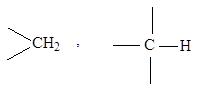
所以是 CH3CH2COOH 丙酸
25. 5 分 (4389)
[答]3-甲基戊烷, 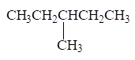
775cm-1乙基的弯曲振动要注意
26. 5 分 (4390)
[答]B比A谱图简单
(1) A在3300～3000cm-1有C-H(C=C-H)伸缩振动吸收峰 B没有
(2) A在1675～1500cm-1处有C=C伸缩振动吸收峰 B没有
27. 5 分 (4391)
[答] (1)A在3300～3000cm-1有C-H (Ar-H) 伸缩振动吸收峰
B在3000～2700cm-1有C-H( 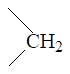
(2) A在1675～1500cm-1有苯环的骨架振动n (C=C)
B没有
(3) A在1000～650cm-1有苯C-H的变形振动吸收峰
B在1475～1000cm-1有C-H变形振动吸收峰
28. 5 分 (4392)
[答]CH3-CH2-CH2-CH2-CH=CH2
吸收峰波数范围(/cm-1) 引起吸收的峰
(1) 3300～3000 n(C-H) (C=C-H)
(2) 3000～2700 n(C-H )(-CH3, )
(3) 1675～1500 n(C=C)
(4) 1475～1300 d(C-H)
(5) 1000～650
d(C-H) ( 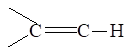
29. 5 分 (4393)
[答](1) A在1900～1650cm-1有两个C=O伸缩振动吸收峰(振动的偶合)， B, C在1900～1650cm-1只有一个C=O伸缩振动吸收峰
(2) B的C=O吸收峰在波数高的位置， C则在波数相对较低的位置
30. 5 分 (4394)
[答] A谱图比B谱图简单
(1) A不出现的伸缩振动吸收峰, 因为偶极矩没有变化
B在2400～2100cm-1处有伸缩振动的吸收峰
(2) B在1900～1650cm-1有C=O伸缩振动吸收峰
A在1900～1650cm-1没有C=O吸收峰
(3) B在3000～2700cm-1有C-H伸缩振动吸收峰由CHO引起
A没有
31. 5 分 (4395)
[答] 吸收峰向低波数移动, 吸收强度增大, 谱带变宽。
由于乙醇形成了分子间氢键, 当乙醇浓度很小时, 分子间不形成氢键, 显示了游离OH的吸收在高波数, 随着乙醇浓度的增加, 游离羟基吸收减弱, 而多聚体的吸收相继出现. (原因部分只回答形成了分子间氢键也是正确的).
32. 5 分 (4396)
[答]不变化。
邻硝基苯酚在上述两个浓度溶液中都生成了分子内氢键, 分子内氢键不受溶液浓度
的影响.
33. 5 分 (4397)
[答](2) 有羰基C=O, 1600cm-1吸收带
甲基CH3 ,2960cm-1吸收带
34. 5 分 (4398)
[答](1) C=O
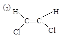
35. 5 分 (4399)
[答](1) 伸缩振动
(2) 反对称伸缩振动
(3) 基频峰
36. 10 分 (4469)
[答]
从IR看有: ≡C-H, C=C的伸缩振动; 在895cm-1有 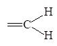
以及在1790cm-1处有它的倍频, 因此为 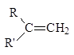
从NMR谱看出连接在双键上两个质子在环境上是不等同的, 因此是两个单峰(d=4.6,4.8)，而在d=0.9处有9个质子, 这是叔丁基,另外五个质子是两个质子的单峰, 因此可能结构:
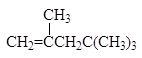
37. 10 分 (4470)
[答] 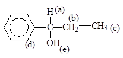
(a)1H 三重峰 d=4.3 (b) 2H 四重峰 d=1.6 (c) 3H 三重峰 d=0.8
(d) 5H 单峰 d=7.2 (e) 1H 宽峰 d=3.9
38. 5 分 (4471)
[答] 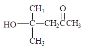
39. 5 分 (4472)
[答] 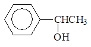
40. 5 分 (4473)
[答] 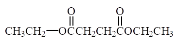
d: 1.2 4.1 2.5 2.5 4.1 1.2
41. 5 分 (4474)
[答] 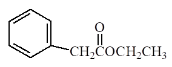
d: 7.3 3.5 4.1 1.2
42. 5 分 (4477)
[答] 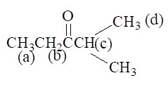
(a)d1.00
(b)d2.13
(c) d3.52
(d) d 1.13
43. 4 分 (4478)
[答] (1) 前者n(C=C)较后者稍低(1620cm-1), 但强度比后者大. (2分)
(2) 后者(在2800～3000cm-1)有甲基和亚甲基的伸缩峰ns 和nas,以及在1450cm-1
附近的变形峰, 前者没有. (2分)
44. 4 分 (4479)
[答] 在1600～1650cm-1没有n(C=C)的是反-2-丁烯, 它的n(C=C)是红外非活性的; 在1600～1650cm-1范围n(C=C)的波数较高而强度较大者为(3), 这是由于Cl的亲 电诱导.[另一个波数较低, 强度较弱的n(C=C)是结构(1)的]].
45. 5 分 (4614)
四甲基是一个具有对称中心的烯烃, 因此,n C=C吸收在红外光谱中观察不到, 仅能与甲 基有关的吸收峰, 即: 小于3000cm-1处的吸收带, 及1460cm-1, 1380cm-1。
46. 5 分 (4615)
选用研糊法或溴化钾压片法。
用细粉末测得的红外光谱, 大部分辐射将由于散射而损失. 如果把试样分散在具有与 试样相同折射率的介质(液体或固体)中, 光损失将大大下降, 从而可获得令人满意的光谱。
47. 5 分 (4616)
由于丙二酸HOOCCH2COOH的两个－COOH同时与一个－CH2－相连， 两个－C＝O会产生振动耦合，故n C＝O将分裂成两个峰，即n C＝O1740cm－1和1710cm－1。然而戊二酸不具备产生振动耦合的条件， 故n C＝O只出现一个峰。
48. 5 分 (4617)
有如下特征吸收:
(1) -CHO中的n C-H:2900~2700cm-1, 弱,双峰;
(2) 烷基中的n C-H: <3000cm-1;
(3) n C=O , 1720~1730cm-1, 强;
(4) d C-H, 1380cm-1, 1460cm -1。
49. 2 分 (4618)
红外光谱不能区别（1）物质对，因为它们是手性异构；可以区别（2）物质对，因为它们是顺反异构。（2）物质似不存在顺反异构
50. 5 分 (4619)
有如下特征吸收:
(1) n C≡C-H: ~3300cm-1 ;
(2) n C-H : <3000cm-1 ;
(3) n C≡C: 2140~2100cm-1 ;
(4) dC-H :1380~1475cm -1。
51. 5 分 (4620)
有如下特征吸收:
(1) n O-H(缔合): 3000 ~2500cm-1 ;
(2) n C-H : <3000cm-1 ;
(3) n C=O(缔合): 1740~1700cm-1 ;
(4) dC-H : 1475~1300cm -1。
52. 5 分 (4621)
A、B二个化合物都是2－丁烯，故它们在3040cm-1 ～3010cm-1区域内有n＝C－H吸收，在1680cm-1～1620cm-1 有n C＝C吸收。由于A是反式， B是顺式，故n C＝C 强度A稍弱于B。在指纹区γ＝C－H不同， A应在970cm-1，B应在690cm-1。
53. 5 分 (4622)
3030cm-1 为苯基的ν=CH, 2920cm-1为甲基的νC-H ;
2217 m-1为νCN(因与苯环共轭使C≡N 出现在较低波数);
1607, 1058和1450cm-1为苯环骨架振动;
817cm-1为对二取代苯的特征吸收峰。
54. 5 分 (4623)
3080cm-1为不饱和n =CH, 2960cm-1为甲基中反对称伸缩振动n CH
1745cm-1为n C=O, 1650cm-1 为n C=C,
1378cm-1为乙酰氧基中甲基的对称弯曲振动
1240cm-1为乙酰氧基C-O-C伸缩振动
1032, 989, 931cm-1为端乙烯基的面外弯曲振动
55. 5 分 (4624)
（B）不符合IR光谱。
因为（A）与（C）结构中羰基与芳环共轭使n C＝O吸收能量降低， 使n C＝O <1700cm-1； （A）结构中OH与C＝O形成分子内氢键， 使n O－H吸收能量也降低，n O－H < 3500cm-1 。而（C）结构形成分子间氢键，其它两种结构没有这种性质，它们的n C＝O和n OH应> 1700cm-1和在3500cm-1附近。
（写对答案得2 分；写对答案，又分析正确得5分）
56. 5 分 (4625)
该化合物最可能的结构可以是(1)HC≡C-COOCH2-C≡N
(2)CH3-COO-C≡C-C≡N
(3) N≡C-C≡C-COO-CH3
因为:1725cm-1表明有酯C=O存在
2210cm-1表明有R’-C≡C-R叁键结构的存在
2280cm-1表明有 -C≡N结构存在
其中, (1) 结构最合理(2280cm-1应当是非共轭的-C≡N结构 ), (2)(3)两种也可能学生会 写出。 (写对结构得5分, 结构不对, 但局部分析有理, 酌情给分)
57. 10 分 (4626)
最可能的结构为： 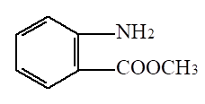
因为：3300～3500cm-1的两个峰表示－NH2对称和不对称伸缩振动。
1700cm-1为酯羰基的伸缩振动。
770～735cm-1吸收峰为芳环邻二取代之特征峰。
比较其它结构无一具有上述全部特征。
58. 5 分 (4627)
该化合物为环戊醇 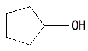
计算得不饱和度为1，说明可能有一个环
3300cm-1 的宽峰为－OH
<3000cm-1 的特征峰为饱和C－H伸缩振动
1460cm-1 附近有CH2特征吸收。